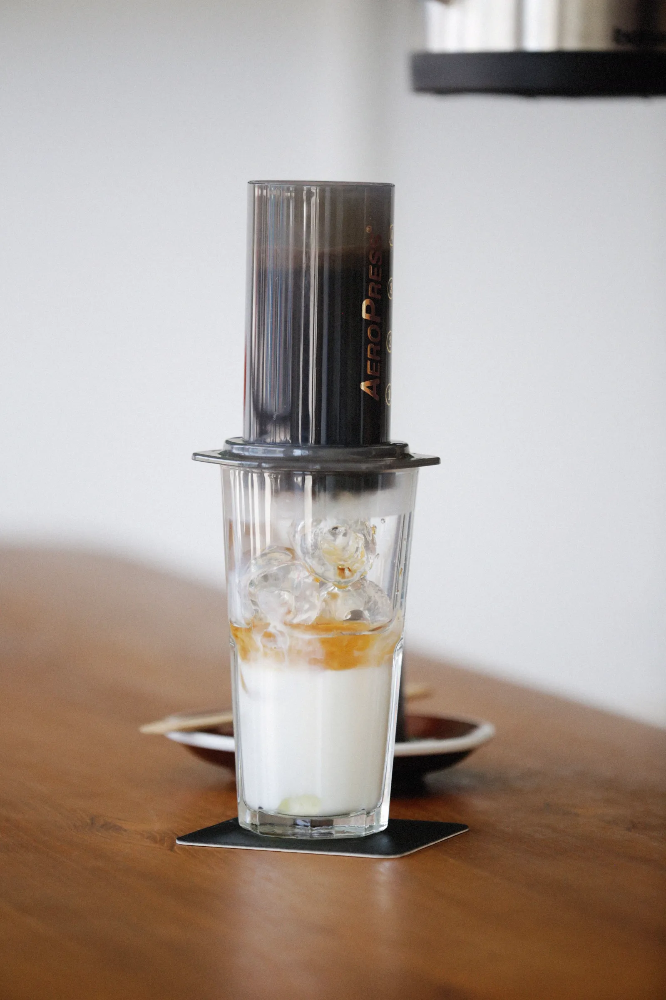
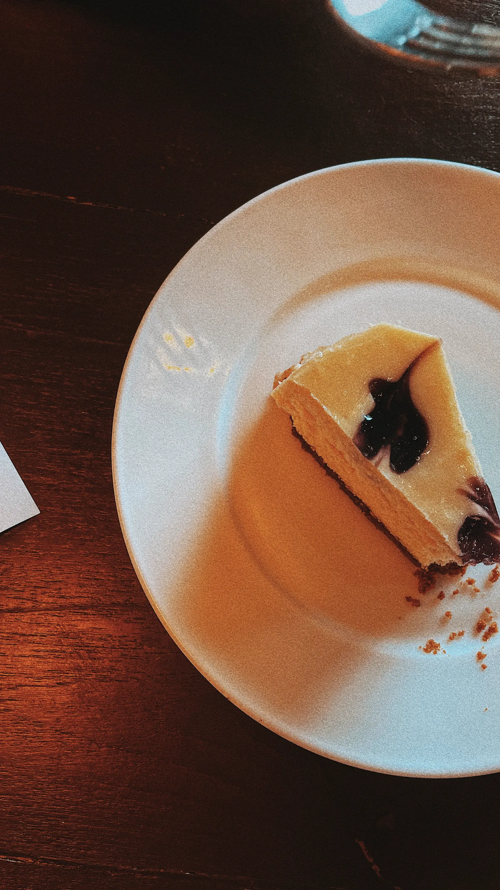
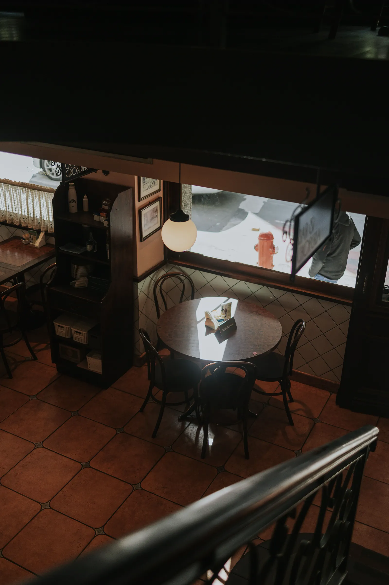

our philosophy
roast
roast
the quiet
静けさを、焙煎する。
自家焙煎一杯ずつハンドドリップ季節のスイーツ
騒がしい一日の途中に、音の少ない一杯を。CAFE AOKIは、店の奥の小さな焙煎機で毎朝その日の豆を焼く、自家焙煎の珈琲店です。
浅煎りの果実味から、深煎りの重い甘さまで。豆の声を聞きながら、今日の火加減を決めます。
こだわりを読む
from the menu
a taste of the menu
メニューから、少しだけ。
青木ブレンド（ハンドドリップ）
¥620黒糖ナッツまるい苦味
中深煎り

アイスコーヒー
¥600すっきり柑橘
中煎り

ベイクドチーズケーキ
¥520ベリーソース添え
three origins
いつもの三銘柄
産地ごとの個性を、それぞれに合う焙煎度で。
どれにするか迷ったら、カウンターでお気軽にどうぞ。

the place
a quiet corner
神南の路地裏に。
駅から歩いて7分、看板は小さな豆の絵だけ。席は14席、長居できるように椅子は少し深めです。電源と本棚、それから店主の焙煎の音があります。
朝8時から。モーニングは10時半まで。
店舗案内・アクセスslowly, honestly — since 2019
ゆっくり、正直に。
- 2019 神南の路地裏に開店（席数10・手廻し焙煎から）
- 2020 小型焙煎機を導入（毎朝の店内焙煎はじまる）
- 2021 モーニング開始（8:00–10:30）
- 2022 豆の量り売りを開始（焙煎日を袋に記して）
- 2024 店内を少し広く（席数14に）
- 2026 いまも、毎朝焙煎（今日の豆は店頭の黒板に）
follow us
daily cups on instagram
今日の豆と、今日の一杯を。